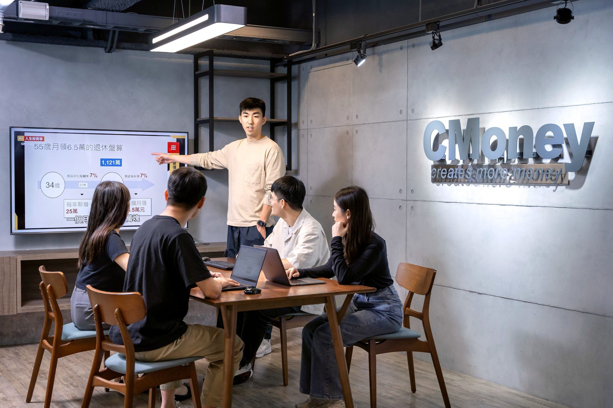
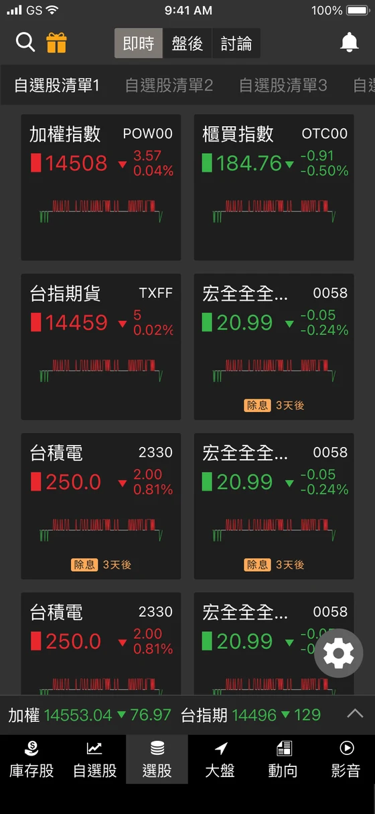
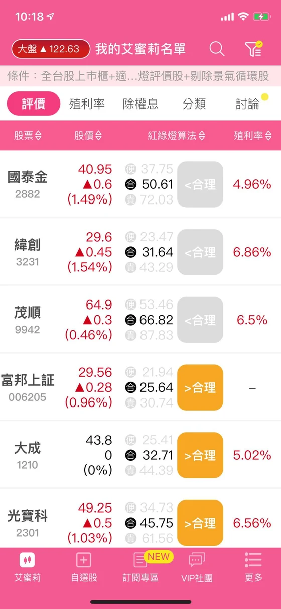
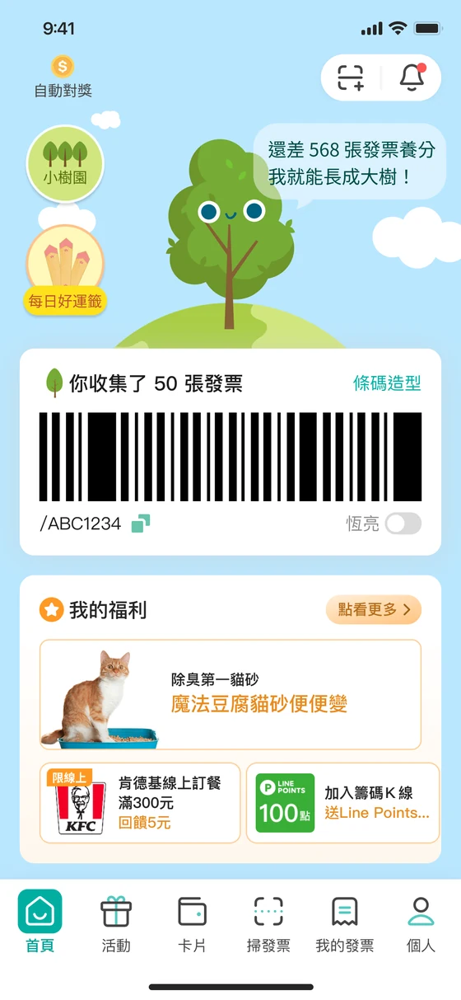
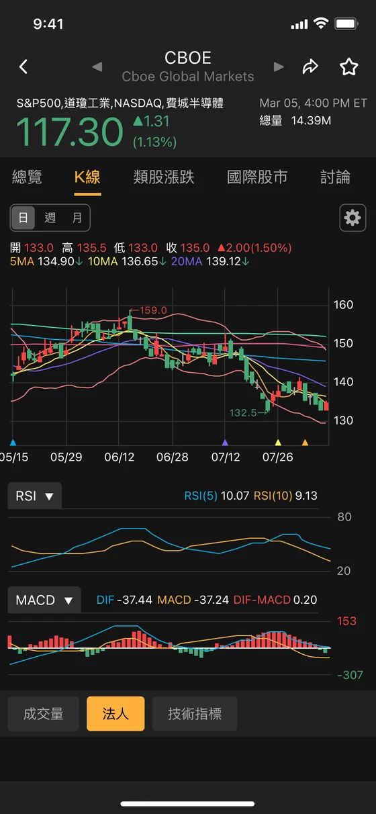
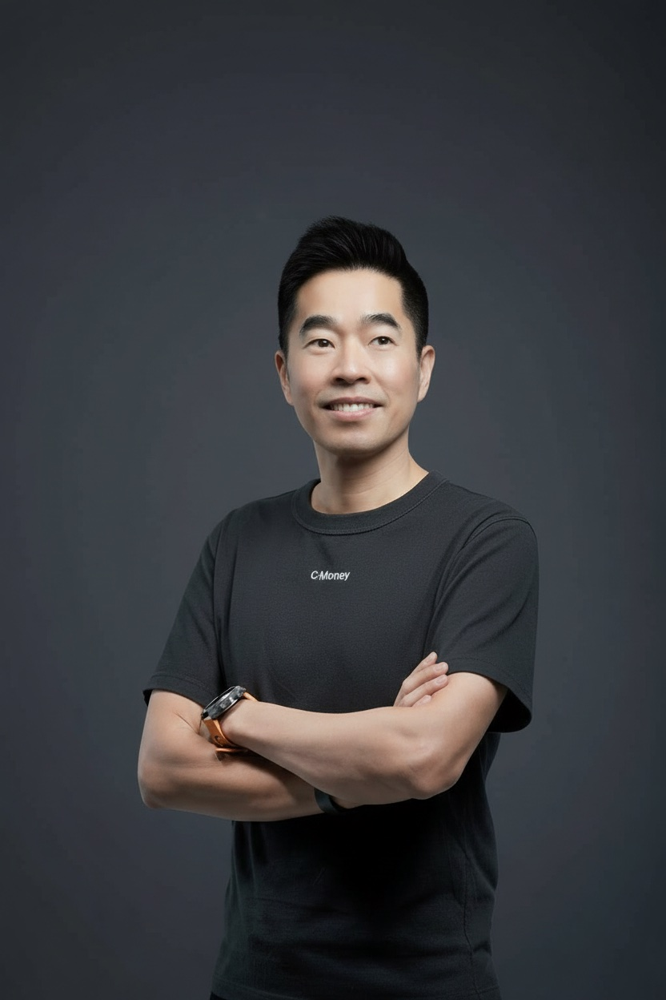

VISION我們希望看見的世界
每個人，都能擁有自己的美好人生。
好的工具改變行動，好的社群促成互助；當好的改變被反覆強化，就會形成正向循環。

Build Better Decisions
CMoney 用資料、產品與社群，把複雜資訊變成可理解、可比較、可行動的選擇，幫助每個人在重要的人生面向持續做得更好。
1,300萬+
累計使用者
台灣主流金融理財高頻用戶首選
90%
台灣金融機構合作
深受信賴的決策數據與技術夥伴
200+
數位產品與服務
橫跨投資、社群、記帳等生活層面
5大
人生重要面向
財富、健康、工作、家庭與人際關係
產品會改變，技術會改變，市場也一定會改變。真正值得長期存在的，是我們選擇替誰解決什麼問題。
企業存在的理由不是維持既有業務，而是持續為使用者創造比昨天更好的答案。
好的工具改變行動，好的社群促成互助；當好的改變被反覆強化，就會形成正向循環。
在人生重要的選擇裡，幫助人取得更好的資訊，形成更好的判斷，做出更好的決定。
以資料看見真實，以產品降低行動成本，以社群讓經驗流動，再從結果持續學習。
當沒有標準答案或想法衝突時，我們不迴避摩擦，而是用嚴謹的邏輯與坦誠的對話找出突破口。 正是這些日常的勇敢選擇，塑造了我們每一個人，也築起了 CMoney 的企業文化。 如果您也認同這些理念，請繼續閱讀。
不是把事情做完，而是真的讓事情變得更好。
完成專案、達成KPI、推出功能、開完會，都不是目的。真正重要的是：使用者的問題有沒有因此被解決？產品有沒有因此變得更好？團隊是不是能做到以前做不到的事情？公司是否因此更接近自己的使命？
所以在CMoney，我們不把「很努力」本身當成成果。努力值得尊重，但只有當努力最終轉化成價值，它才有意義。
我們尊重經驗，但更尊重事實。
如果一件事情沒有產生預期效果，我們不希望回答：「可是我的部分已經做完了。」真正的責任不是完成自己那一小塊，而是關心最後的結果有沒有發生。
今天的自己，不應該成為明天的上限。
在CMoney，成長不是額外的要求，而是工作的一部分。自我超越，不是要求每個人變成別人，而是不讓今天的能力，限制明天能解決的問題。
不知道沒有關係；重要的是能否快速學習、承認差距，讓自己具備解決下一個問題的能力。
Truth-seeking 要走在 Ego-protection 前面。
有些問題一直出現，不一定只是環境不好；它也可能在提醒我們，目前的能力、認知或工作方法，已經不足以解決下一個階段的問題。
讓你的力量朝向同一個方向。
身，是行動；心，是思考與判斷；靈，是我們真實的感受。當三者與自己真正認同的目標一致，一個人的力量便不需要消耗在內部互相拉扯。
重要的事情，本來就會產生衝突。你可能理性知道應該停止一個專案，情感上卻捨不得；你可能認同公司的目標，卻不認同主管提出的方法；也可能嘴上說某件事最重要，每天真正花時間的卻是另一件事。
當思考、感受與行動彼此衝突，通常代表有一個問題還沒有真正被解決。
如果不同意，就把原因說清楚；如果不知道，就承認不知道；如果看到風險，就提出來。我們鼓勵彼此說服，也願意被說服，因為討論的目的不是證明誰比較厲害，而是一起更接近事實。
這是我們希望一起工作的人長成的樣子，也是我們希望 CMoney 成為的公司。
多數公司先畫組織圖，再把人放進職缺；CMoney 先找值得解的問題，再組成能把問題變成結果的人。
常見公司的預設
在既定範圍把事情做好
CMoney 的預設
角色跟著問題與能力改變
為什麼會不同
當商業模式已經穩定，工作可以被切成明確職能：產品、行銷、業務各自把分內工作做好。但新事業看起來像行銷問題，實際可能是產品價值不夠；看起來缺業務，可能其實是客群選錯了。
所以在 CMoney，我們不希望一開始就把人關進職稱裡，而是先問：現在最值得解決的問題是什麼？誰最適合把它推進？
實際工作時
你仍然會有清楚的任務、權責與成功標準，但解法不會全部預先寫好。隨著市場回饋，你負責的範圍、合作對象，甚至團隊組成都可能改變。
面試時，建議你確認
「這個職位有哪些核心責任會保持穩定？哪些範圍可能隨問題與能力而調整？」
常見公司的預設
先說服主管，再開始執行
CMoney 的預設
先用低成本取得市場證據
為什麼會不同
簡報完整、預測漂亮，不代表客戶真的需要。因此，我們傾向先用最小成本取得真實答案，再依據市場證據增加投入。
成熟事業除了創造現金流，也提供新產品實驗所需的資料、流量與基礎建設；而新產品要用證據證明，下一步值得被加碼。
實際工作時
一開始你可能不會立刻獲得完整團隊與大筆預算，而是先說清楚：最關鍵的假設、最小驗證方法、多久看見訊號，以及什麼結果代表應該加碼、調整或停止。
面試時，建議你確認
「這個職位最先要驗證什麼？起始資源有哪些？出現什麼證據後，公司會增加投入？」
常見公司的預設
是否準時交付承諾項目
CMoney 的預設
有沒有讓未知變少、價值變大
為什麼會不同
因此，CMoney 重視的不只是執行力，也包括你能不能找出真正的 Top 1 Thing：目前哪一個問題，最限制產品或事業的成長？
一次實驗即使沒有成功，只要它排除重要假設、讓團隊停止錯誤投入，也可能是有價值的進展。但這不代表失敗沒有責任，我們仍會看假設、執行與學習是否紮實。
實際工作時
你可能完成十項功能，但如果留存率、付費率或客戶價值沒有改善，我們不會因為工作很忙，就認定問題已經解決。新證據出現時，原定工作甚至應該被停止。
面試時，建議你確認
「這個職位目前的 Top 1 Thing 是什麼？哪個使用者結果或事業指標，代表它真的前進？」
常見公司的預設
職位越高，決定越多
CMoney 的預設
誰最接近事實，誰應該做決定
為什麼會不同
新事業的資訊變化很快。如果每個決定都要逐層請示，最接近事實的人反而無法即時行動。因此，決策權不應只跟著年資或職稱，而應跟著對問題的理解與承擔。
但這不是無條件自由。權力增加的同時，對結果、判斷品質與資訊透明的責任也會增加。
實際工作時
Project Owner 可以在約定範圍內決定客群、優先順序、產品範圍與測試方法。主管則必須說清楚目標、資源上限、不可跨越的邊界與檢查節點。授權不是一句「你自己想辦法」。
面試時，建議你確認
「這個職位可以獨立決定什麼？哪些事情需要共同決定？主管會在哪些節點介入與校正？」
你到職第六週，負責的新事業線成長停滯。翻完數據、也跟第一線用戶與業務談過後，你判斷卡住的不是流量或素材，而是我們對這群客戶的「價值主張」可能一開始就說錯了。但產品定位不在你的職權範圍，此時你會怎麼做？
選一個做法，解鎖 CMoney 的看法
兩種做法都合理。選你真的會做的那個，看看各自在對什麼負責。
↑ 先從上面選 A 或 B
CMoney 期待你在發現問題時跨出職責邊界，和相關負責人一起決定怎麼驗證、哪些投入先暫停。
請回想最近一次「真正的問題不在你的職責範圍內」：你怎麼判斷該不該走進去？你帶著什麼證據、和誰一起決定下一步？最後那個問題有沒有前進？
運用 Problem Solving 框架解題我們用「Problem Solving」框架把問題思考清楚，從表象出發，深挖真正的問題是什麼。閱讀工作現場文章 →你在負責一款投資產品時，社群與客服陸續收到少數用戶詢問「希望提供美股個股籌碼分析」。這代表了一個潛在機會，但目前市場訊號仍相當微弱且充滿未知。作為專案負責人，你會如何驗證這個潛在機會？
選一個做法，解鎖 CMoney 的看法
兩種做法都合理。選你真的會做的那個，看看各自在對什麼負責。
↑ 先從上面選 A 或 B
CMoney 期待夥伴具備「強判斷」的特質：用最低成本，取得足以改變決策的新資訊。
請回想最近一次你手上只有很微弱的訊號，卻想確認它值不值得做：你把驗證拆成哪幾個階段？看到什麼結果讓你決定繼續、調整或止損？那個證據有沒有替你換到資源？
我們如何在兩個極端的害怕中做出決定直播功能在供給、需求、成本三重不確定下，用「不要預測，用驗證的」推進。閱讀工作現場文章 →A 專案以「提升留存率」為目標列出 5 個假設，做到第 3 個時數據已大幅突破，並超越 OKR 10% 的目標（提升 25%）。剩下 2 個假設，你會選擇怎麼做？
選一個做法，解鎖 CMoney 的看法
兩種做法都合理。選你真的會做的那個，看看各自在對什麼負責。
↑ 先從上面選 A 或 B
CMoney 期待對目標負責的人，我們看的是：未知是否減少、使用者價值是否增加，以及資源是否投在當下槓桿最高的地方。
請回想最近一次你中途重新評估自己承諾過的計畫：你看到什麼新證據？怎麼決定續做或停止？怎麼跟相關的人說？
流程都做對了，為什麼問題還是沒解決？在 CMoney，我們願意為了用戶的真實感受，推翻一套已經「看起來很完整」的做法。閱讀工作現場文章 →線上系統突發大規模用戶客訴，原因介於「產品邏輯瑕疵」與「營運活動規則漏洞」之間，目前沒有既定 SOP，跨部門權責未明。你會？
選一個做法，解鎖 CMoney 的看法
兩種做法都合理。選你真的會做的那個，看看各自在對什麼負責。
↑ 先從上面選 A 或 B
CMoney 期待對現場負責的人：誰最接近事實、願意承擔結果，誰就應擁有相應的決策權。
請回想最近一次你在權責未明時先動手：你怎麼判斷哪些事自己可以決定、哪些需要升級？
如何鍛鍊「決策正確」的能力？「決策」是一種極度個人化且極具價值的技能，也需要在不同場景中不斷磨練。閱讀工作現場文章 →不同事業面對不同人群、場景與市場，
我們做的是同一件事：縮短人與好決定之間的距離。
Finance
陪伴每個人成為更成熟的投資人。從學習、選股、交易到社群討論，提供台股與美股完整的投資決策工具，旗下包含深受百萬用戶喜愛的經典應用。

Partnership
讓專業知識成為真正能被使用的工具。
50+專業投資創作者生態系

Consumer
從每一張發票，看見更好的生活選擇。讓大量去識別化資料成為企業改善產品的強大依據。

Global
讓好的投資方法跨越市場與語言。從美股出發，與全球創作者共同建立在地化工具、內容與合作平台。


29歲時，寫下第一套投資分析工具
大學時接觸投資，我得到的不只是投資上的經驗，而是開始理解：面對不確定，我們必須蒐集資訊、形成判斷，也承擔結果。
29歲時，我看見金融研究人員每天處理大量資料，卻缺少真正能驗證判斷的工具，於是自己動手寫下分析軟體。
後來我愈來愈確定，一個工具還不夠。我希望更多人都能取得幫助自己思考、行動與彼此支持的工具和社群。這成為CMoney的起點，也成為我們今天仍在做的事。
CMoney從一個人的問題開始，但不能永遠依靠一個人的答案。今天，我們要建立的是一套讓更多人做出好決定，也讓更多同事成為問題Owner的系統。